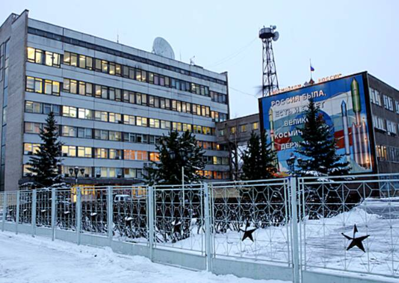

Plesetsk Cosmodrome
Arkhangelsk region, Russia

Russia's northern military spaceport. A 1977 launch from here is the likely cause of the Petrozavodsk phenomenon. 1
Open in the interactive Watcher
Related
Sources
- Petrozavodsk phenomenon Wikipedia